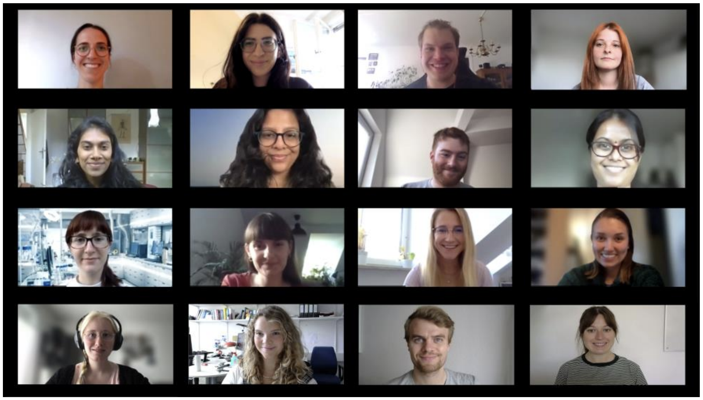

¿Alguna vez te preguntaste cómo sabemos lo que sabemos sobre el cerebro? ¿Cómo los científicos y médicos intentan (y logran, y fallan) aplicar este conocimiento para mejorar la vida de quienes sufren?
El grupo PsyComm de IMPRS-TP es un grupo de estudiantes de doctorado que creen en la importancia de comunicar la ciencia al público en general y, especialmente, a chicos y adolescentes, en un esfuerzo por fomentar el pensamiento científico desde una edad temprana. Nuestro objetivo es educar al público general desde joven, sobre la salud mental y las enfermedades mentales. De esta manera, esperamos aumentar la conciencia y reducir el estigma asociado con ellas.
Con esto en mente, diseñamos un pequño libro para ofrecer una visión general de los fundamentos de la salud mental y de cómo se investiga. En términos sencillos que pretenden ser accesibles para todos, narramos los conceptos básicos de la anatomía y función del cerebro, y lo que sabemos sobre cómo pueden ocurrir las enfermedades mentales. Además, profundizamos en la genética y en la influencia del entorno en nuestro comportamiento, transmitiendo que, contrariamente a la falsa dicotomía popular, el comportamiento tanto se nace como se hace.
En resumen, los capítulos de este libro te van a ayudar (a vos y/o a tus hijes) a comprender los principios científicos que subyacen a la función mental, la enfermedad y el proceso de investigación que se sigue hoy en día para estudiarlas.
Si bien lamentablemente el folleto oficial sólo está disponible en inglés y en alemán, la versión no editada en castellano se puede descargar acá. ¡Esperamos te resulte útil!
Si tienes alguna pregunta o comentario, no dudes en ponerte en contacto con nosotros en imprs-tp-scicomm@psych.mpg.de.
Personalmente, me gustaría tomar un momento para agradecer a todos y cada uno de los miembros del grupo. Fue un placer trabajar con todos ustedes, y estoy orgulloso de lo que logramos juntos. Al momento de escribir esto, muchos de nosotros ya terminamos el doctorado y avanzamos en nuestras carreras, ¡pero estoy deseando ver qué depara el futuro para los nuevos miembros!

Miembros que participaron en la escritura y edición (de arriba a la izquierda a abajo a la derecha): Lea Brix, Anthi Krontira, Marius Stephan, Elena Brivio, Sowmya Narayan, Adyasha Kunthia, Lucas Miranda, Srivaishnavi Loganathan, Anna Fröhlich, Anna Zych, Muriel Frisch, Cassandra Deichsel, Linda Dieckmann, Mira Erhart, Nicolas Rost y Julia Fietz. Ane Ayo Martin no está en la foto.